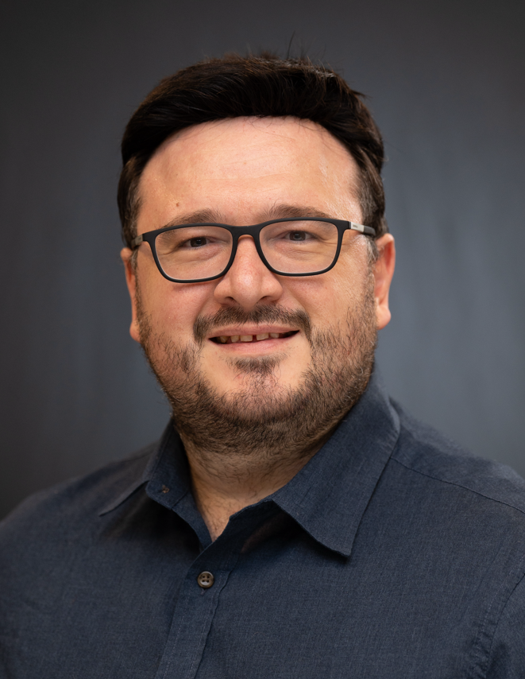

Dr. Burak KÜRKÇÜ
|
 |
Assistant Professor,
Electrical and Computer Engineering
Santa Clara University
bkurkcu[at]scu[dot]edu
|
Bio
Dr. Kürkçü is an Assistant Professor in the Department of Electrical and Computer Engineering.
Before joining SCU as a faculty, he was a Research Scholar at UC Berkeley for two year working with Professor Masayoshi Tomizuka , and held several positions at Hacettepe University as an assistant professor and Aselsan Inc., where he worked as a Senior Control System Design Engineer for a decade.
He received his Ph.D. and M.Sc. degrees from the Department of Electrical and Electronics Engineering at TOBB University of Economics and Technology in 2019 and 2015 respectively. He received the B.Sc degree from the Istanbul Technical University in 2010.
He received the IEEE Turkey Ph.D. Thesis Award in 2020. He is an Associate Editor of TIMC, Measurement and Control, and Turkish Journal of Electrical Engineering and Computer Science.
Research Interests
Robust Control, Switched NN & Simultaneous Learning, Robotics, Autonomous Systems
Updates and News
31 March 2025: We have a new paper accepted to IEEE/ASME Transactions on Mechatronics.
- W. Yang, B. Kürkçü, and M. Tomizuka, "Underactuated Control of Multiple Soft Pneumatic Actuators via Stable Inversion," IEEE/ASME Transactions on Mechatronics. Link to the paper.
21 Jan 2025: Happy to share you that I have been elected as the Vice-Chair for the IEEE SCV/SF Joint Section Control System Chapter (CSS/SMC)!
01 Sep 2024: Thrilled to inform you that I have joined the ECE Department at Santa Clara University as an Assistant Professor.
01 May 2024: We have 2 journal papers and 1 conference paper from our group accepted.
- Yang, W., Kurkcu, B., Tomizuka, M., "Approximated Modeling and Optimal Design for a
Soft Pneumatic Actuator Considering the Force/Torque and System Controllability" ASME
JMD, 2024. Link to the paper.
- Efe, M. O., Kurkcu, B., Kasnakoglu, C., Zaharuddin, M., Zhijie, L.,"Masked Multiple State
Space Model Identifcation Using FRD and Evolutionary Optimization" IEEE Trans. on
Ind. Informatics, 2024. Link to the paper.
- Yang, W., Stuart, H., Kurkcu, B., and Tomizuka, M. “Nonlinear Parameter-Varying Modeling
for Soft Pneumatic Actuators and Data-Driven Parameter
Estimation ” IEEE/ASME AIM, 2024
10 Mar 2024: We have a new paper from our group accepted to IEEE/IFAC 8th International Conference on Control Automation and Diagnosis (ICCAD'24)
- Gün, M., Kürkçü, B., and Kaya, A., "Extending Virtual Force Field for Obstacle Avoidance via Polynomial Extrapolation"
14 Feb 2024:I gave a talk on robust control for soft robots at the University of Sheffield - ASCE's Research Seminar.
11 Feb 2024: We have a new paper accepted to IEEE Transactions on Emerging Topics in Computational Intelligence
- M. Ö. Efe, B. Kürkçü, C. Kasnakoǧlu, Z. Mohamed and Z. Liu, "Switched Neural Networks for Simultaneous Learning of Multiple Functions" in IEEE Transactions on Emerging Topics in Computational Intelligencelink to the paper
10 Feb 2024:I gave a talk on Robust Robotics at the Colorado School of Mines Space Resources Program.
29 Nov 2023: We have a new paper accepted to IEEE Transactions on Circuits and Systems II
- M. Ö. Efe, B. Kürkçü, C. Kasnakoǧlu, Z. Mohamed and Z. Liu, "A Modified Levenberg Marquardt Algorithm for Simultaneous Learning of Multiple Datasets," in IEEE Transactions on Circuits and Systems II: Express Briefs, doi: 10.1109/TCSII.2023.3335140. Link to the paper
10 Oct 2023: We have 2 papers from our group at UC Berkeley accepted to IEEE ROBIO.
- Yang, W.T., Kürkçü, B., Hirao, M., Sun, L., Zhu, X., Zhang, Z., Gu, G., X., Tomizuka, M., "Control of Soft Pneumatic Actuators with Approximated Dynamical Modeling". Link to the paper.
- Hirao, M., Kürkçü, B., Ghanbarpour, A., Tomizuka, M., "Frequency Domain Analysis of Nonlinear Series Elastic Actuator via Describing Function". Link to the paper.
5 Sep 2023: We have a new paper from our group accepted to 13th EASN International Conference.
- Demirli. A, and Koç. İ., M., Kürkçü. B., "L1 adaptive controller design for a tail fin controlled fixed wing unmanned aerial vehicle" linkto the paper
23 Aug 2023:Glad to inform you that I have joined the editorial board of Turkish Journal of Electrical Engineering and Computer Science as a new Guest Editor. Look forward to see your outstanding manuscripts.
15 May 2023: We have a new paper from our group accepted to IEEE CCTA.
- Özçelik. M, Kürkçü. B, and Bayraktaroğlu. Z., Y., "Experimental Comparison of H-Infinity Synthesis and Feedback Linearization on a MIMO Gimbal Example" link to the paper
14 Feb 2023:Glad to inform you that I have joined the editorial board of Transactions of the Institute of Measurement and Control (TIMC) (SCI-Q3) as a new Associate Editor. Look forward to see your outstanding manuscripts.
23 Jan 2023:Glad to inform you that I have joined the editorial board of Measurement and Control (SCI-Q3) as a new Associate Editor. Look forward to see your outstanding manuscripts.
15 Jan 2023:I joined the Prof. Masayoshi Tomizuka's Systems Control Group at UC Berkeley as a Research Scholar.
09 Jan 2023: Happy to share that our paper "Modelling and Simulation of 2 DOF Gimbal System with Experimental System Identification" is publised on the IEEE 10th International Conference on Systems and Control (ICSC). Link to the paper.
13 Oct 2022: Happy to share that our paper "A New Adaptive Disturbance/Uncertainty Estimator Based Control Scheme For LTI Systems" is publised in IEEE Access (SCI-Q1- IF:3.476) . Link to the paper.
15 Sep 2022:We have a paper from our group accepted to TOK 2022, Elazığ.
- Kaplan, M., R., Kurkcu, B., ve Bayraktaroglu, Z, Y. "Bozucu Gözleyici Yaklaşımların İncelenmesi: Bir Gimbal Örneği"" TOK Automatic Control National Committee Meeting,
Elazıg,Turkey, 2022 Link to the paper.
17 Aug 2022: I will be teaching BBM 231 - Logic Design and BBM 341 - Systems Programming
08 Aug 2022: Welcome Mehmet Kerem!
06 May 2022: We have 2 papers from our group accepted to IEEE ICMIMT.
- Albayrak. M, Kürkçü. B, and Ayasun. S, "Switching Based MIMO Robust Autopilot Design: A Munition Example"
- Eser. A. Ö, Kürkçü. B, and Ayasun. S, "Adaptive Notch Filter Design for Flexible Modes of Guided Munitions"
04 May 2022: Happy to share that our paper "On the existence of Equivalent-Input-Disturbance and multiple integral augmentation via H-Infinity Synthesis for unmatched systems" was accepted to ISA Transactions (SCI-Q1- IF:5.468) . Link to the paper. Joint work with Cosku Kasnakoglu from ETU, Mehmet Önder Efe from Hacettepe and Rong Su from NTU Singapore.
01 Feb 2022: I will be teaching BBM 407 - Fuzzy Logic and CMP 756 - Swarm Systems
12 Nov 2021: Happy to share that I am now the Principal Investigator of the newly signed project entitled "Design of a robust motion control system for the satellite antenna system." with a Defense Industry Company.
05 Aug 2021: I will be teaching BBM 205 - Introduction to Discrete Mathematics and BBM 231 - Logic Design this semester
07 June 2021: Happy to share that I am now the Principal Investigator of the newly signed project entitled "Switched Robust Control based Autopilot Design for the underactuated systems" with a Defense Industry Company.
20 May 2021: Glad to inform you that I have joined the editorial board of International Journal of
Robotics and Control Systems as a new Associate Editor.
22 March 2021: Started at Hacettepe University!
|